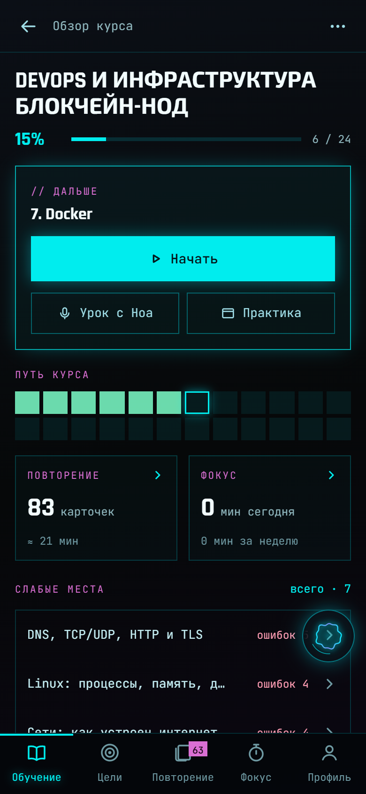

Урок с Ноа
Читает раздел голосом, объясняет по-человечески, после раздела просит вспомнить одно понятие без подсказки.

QRACK Открыть// учёба с ИИ-наставником
Матанализ к сессии, органика, сопромат или собеседование на новую работу — Qrack собирает курс под твою цель, объясняет голосом, гоняет до «наизусть» и принимает устный экзамен разговором, пока ты правда не поймёшь.
// как это работает
«Матанализ, экзамен 20 января, нужны доказательства для устного» или «собеседование на системного аналитика через месяц». Своими словами, хоть голосом.
Прямо в Qrack, на модели, которую ты подключил: план, уроки, понятия, карточки, задачи и экзамен — тема за темой. Учиться можно с первой темы, пока остальные дописываются.
Урок голосом с вопросами по ходу, понятия наизусть по шагам, практика в настоящем терминале — Ноа видит вывод и подсказывает.
Экзамен темы, собеседование разговором — Ноа дослушивает, уточняет и разбирает пробелы, — и повторение карточек ровно тогда, когда начинаешь забывать.
// возможности
Каждую часть можно включить или выключить в «Что использовать» — лишнее пропадёт из экранов.
Читает раздел голосом, объясняет по-человечески, после раздела просит вспомнить одно понятие без подсказки.
«Разобрать подробно» раскладывает раздел по шагам, «Обсудить» — разговор по непонятному месту текстом или голосом.
Понятия порциями по шесть: прочитал, восстановил по пропускам, пересказал своими словами.
Повторение ровно тогда, когда начинаешь забывать. Ответ можно сказать вслух.
Как у доски или на звонке: Ноа дослушивает, задаёт дополнительный вопрос и разбирает пробелы.
Задача по теме: Ноа видит вывод команд и ведёт по шагам. В конце урока — команды, чтобы попробовать руками.
Короткое видео по разделу: блоки, стрелки и голос Ноа поверх — за пару минут.
История по уроку на три голоса — слушать в дороге, а после неё вопросы.
Вся тема на одной странице и карта понятий курса со связями между темами.
Тема словами — разделы, цифры, советы и картинки. Читать, пока он дописывается.
Отрезки с перерывами, заметка «на потом», серия дней и минуты за неделю.
Год → месяц → неделя → сегодня. Задачи дня отмечаются сами, Ноа предлагает план.
// суфлёр
Любое слово, формула или фраза в уроке, карточке или ответе: выделил — «Объяснить», и Ноа объясняет в смысле этого абзаца, а не из словаря. Дальше — разговор: уточняй, переспрашивай, проси пример попроще, хоть голосом, пока не станет ясно.
// своя модель
Курсы, объяснения, разговоры и проверка ответов — на модели, которую выбрал ты. Те же настройки, что в Ноа: модели, на которых она уже работала, переключаются одним касанием, новая подключается по ключу и проверяется сразу.
Ключ хранится на устройстве в зашифрованном виде и уходит только в выбранный сервис.
// что угодно
Курс собирается под твою программу и экзамен — с определениями, доказательствами и задачами, которые реально спрашивают.
первый курс · сессия
ε–δ, формула Тейлора с остаточным членом Лагранжа, Лопиталь — и устный экзамен по билетам.
второй курс · химфак
SN1 против SN2, правило Зайцева, ориентанты — механизмы стрелками, а не зубрёжкой.
новая работа
Требования, UML, SQL и кейсы — с тренировкой собеседования голосом и разбором пробелов.
// цели
Год → месяц → неделя → сегодня. Скажи, чего хочешь и к какому сроку, — Ноа разложит по темам курса и твоему темпу. Задачи дня отмечаются сами: урок прочитан, проверка сдана, минуты фокуса набраны.
// под настроение
Две темы оформления — переключаются в профиле. Попробуй прямо здесь.

// на компьютере
Тот же Qrack отдельной программой: курсы, цели и прогресс общие с телефоном и браузером, Ноа-ассистент внутри — спроси голосом или текстом. Практика — в терминале прямо на твоём компьютере.
// и ещё · для своей нейросети
Курсы собираются в самом Qrack. Но если методичка уже открыта в твоём чате — подключи Qrack как MCP-коннектор и попроси оттуда: «добавь тему про ряды», «поставь цели до сессии». Всё проверяется по тому же стандарту курса.
https://noahlab.ru/qrack/mcp
Онлайн — уже сейчас. Программа для Windows, macOS и Linux и приложение для iPhone и Android — скоро, а посмотреть можно прямо здесь.
// попробовать
Настоящие экраны на выдуманных курсах — матанализ, органика, собеседование. Нажимай что угодно: уроки, наизусть, цели, профиль. Ничего не сломаешь.
Готовится к выпуску · Windows, macOS, Linux
Как она устроенаУже работает · вход через Google, Яндекс, Telegram или почту
Открыть настоящуюСкоро · iPhone и Android
Демо работает без сети и без аккаунта: ответы Ноа здесь — заготовки, курсы выдуманные.